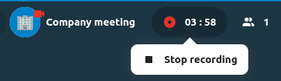
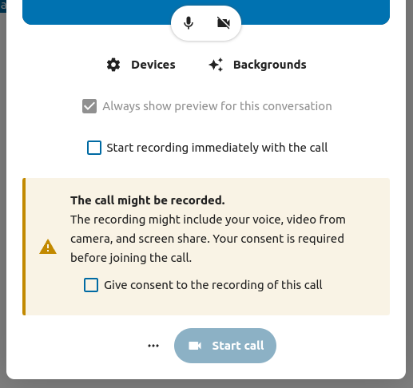
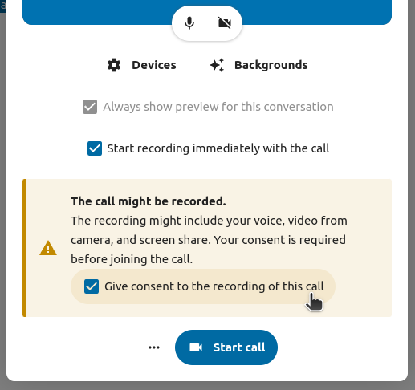
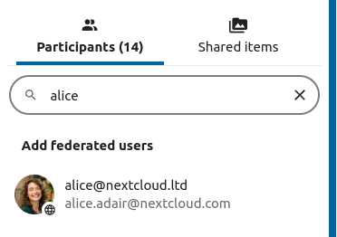
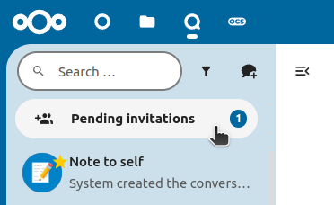

Funcións avanzadas de Talk
Talk de Nextcloud ten unha serie de funcións avanzadas que os usuarios poden atopar útiles.
Matterbridge
A integración de Matterbridge en Talk de Nextcloud fai posíbel crear «pontes» entre conversas de Talk e conversas noutros servizos de parola como MS Teams, Discord, Matrix e outros. Pode atopar unha lista de protocolos admitidos na páxina en GitHub de Matterbridge.
Un moderador pode engadir unha conexión Matterbridge nos axustes das parolas de conversas.

Cada unha das pontes ten a súa propia necesidade no que atinxe a configuración. A información para a maioría está dispoñíbel na wiki de Matterbridge e pódese acceder a eta tras o menú máis información no menú .... Tamén pode acceder á wiki directamente.
Ástrago
A funcionalidade do ástrago permítelle amosar aos convidados unha pantalla de espera ata que comece a chamada. Isto é indicado, por exemplo, para seminarios web con participantes externos.

Pode optar por permitir que os participantes se unan á chamada a unha hora específica ou cando peche manualmente o ástrago.
Ordes
Nextcloud permite aos usuarios executar accións mediante ordes. Normalmente, unha orde adoita ter este aspecto:
/wiki avións
A administración da instancia pode configurar, activar e desactivar ordes. Os usuarios poden usar a orde help para descubrir que ordes están dispoñíbeis.
/help

Atope máis información na documentación administrativa de Talk.
Talk dende Ficheiros
Na aplicación Ficheiros, pode parolar sobre os ficheiros na barra lateral e incluso facer unha chamada mentres os edita. Primeiro ten que unirse á parola.


Após pode parolar ou facer unha chamada con outros participantes, mesmo cando comece a editar o ficheiro.

En Talk, crearase unha conversa para o ficheiro. Pode parolar dende aí ou volver ao ficheiro usando o menú ... na parte superior dereita.

Crea tarefas dende a parola ou compartir as tarefas na parola
Se a Gabeta está instalada, pode usar o menú ... dunha mensaxe de parola e converter a mensaxe nunha tarefa na Gabeta.


Dende a Gabeta, pode compartir tarefas en parolas de conversas.


Salas parciais
As salas parciais permítenlle dividir unha chamada Nextcloud Talk en grupos máis pequenos para debates máis específicos. O moderador da chamada pode crear varias salas e asignar participantes a cada sala.
Note
Breakout rooms are currently not available in conversations that are joinable by guests (public conversations).
Configurar as salas parciais
Para crear salas parciais, ten que ser moderador dunha conversa en grupo. Prema no menú da barra superior e prema en «Preparar as salas parciais».

Abrirase un diálogo onde pode especificar o número de salas que quere crear e o método de asignación dos participantes. Aquí presentaranse 3 opcións:
Asignar automaticamente os participantes: Talk asignará automaticamente os participantes ás salas.
Asignar manualmente os participantes: pasará por un editor de participantes onde pode asignar participantes ás salas.
Permitir que os participantes escollan: os participantes poderán unirse eles mesmos ás salas parciais.

Xestionar as salas parciais
Unha vez creadas as salas parciais, poderá velas na barra lateral.

Dende a cabeceira da barra lateral
Iniciar e deter as salas parciais: isto moverá todos os usuarios da conversa principal ás súas respectivas salas parciais.
Difundir unha mensaxe a todas as salas: enviará unha mensaxe a todas as salas ao mesmo tempo.
Facer cambios nos participantes asignados: abrirase o editor de participantes onde poderá cambiar que participantes están asignados a que sala parcial. Dende este diálogo tamén é posible eliminar as salas parciais.

Dende o elemento da sala parcial da barra lateral, tamén pode unirse a unha sala parcial concreta ou enviar unha mensaxe a unha sala específica.

Call recording
The recording feature provides users with an opportunity to:
Start and stop recordings during a call.
Record the video and audio stream of the speaker, as well as screen share.
Access, share and download recorded files for future reference or distribution.
Enabling this feature requires the recording server to be set up by the system administration.
Manage a recording
The moderator of the conversation can start a recording together with a call start or anytime during a call:
Before the call: tick the checkbox «Start recording immediately with the call» in «Media settings», then click on «Start call».
During the call: click on the top-bar menu, then click «Start recording».


The recording will start shortly, and you will see a red indicator next to the call time. You can stop the recording at any time while the call is still ongoing by clicking on that indicator and selecting «Stop recording», or by using the same action in the top-bar menu. If you do not manually stop the recording, it will end automatically when the call ends.
After stopping a recording, the server will take some time to prepare and save the recorded file. The moderator, who started the recording, receives a notification when the file is uploaded. From there, it can be shared in the chat.


Recording consent
For compliance reasons with various privacy rights, it is possible to ask participants for consent to be recorded before joining the call. The system administration has the flexibility to utilize this feature in several ways:
Disable consent completely.
Enable mandatory consent system-wide, requiring consent for all conversations.
Allow moderators to configure this option on a conversation level. In such cases, moderators can access the conversation settings to configure this option accordingly:

If recording consent is enabled, every participant, including moderators, will see a highlighted section in the «Media settings» before joining a call. This section informs participants that the call may be recorded. To give explicit consent for recording, participants must check the box. If they do not give consent, they will not be allowed to join the call.
 Federated conversation
With Federation feature, users can create conversations across different federated Talk instances and use Talk features as if they were on a same server.
Important Under current development. Basic chat features are available, more to come in the future!
Feature is required to be set up by the system administration.
Send and accept invites
The moderator of the conversation can send an invite to participant on a different server:
When receiving a notification, user will see a counter of pending invites above the conversations list.
{kind=link}
Upon clicking it, more information will be provided about inviting party, and user can either accept or decline the invitation.

By accepting the invite, conversation will appear in the list as any other one.